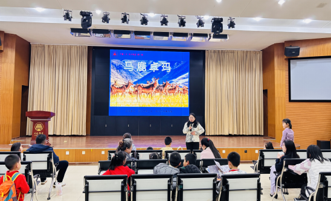

学院通知 · 竞赛比赛
“书香川大 亲子悦读”系列《马鹿卓玛》共读会顺利开展
发布时间：2026-03-24 14:48:04
202 6 年 3月20日晚7点，由四川大学工会和四川大学图书馆共同主办的“书香川大·亲子悦读”系列阅读推广活动 在 望江校区文理图书馆明远讲坛 举行 ，来自四川大学外国语学院、建筑与环境学院、轻工科学与工程学院等单位的20余组教职工家庭参加了活动。本次活动既是“书香川大·亲子悦读”系列的第81期，也是2026年度主题“多彩民族”的首场活动，共读书目为第二十届“文津奖”获奖图书《马鹿卓玛》。 “在这么多种鹿中，哪一位才是今天的马鹿呢？”活动开始，阅读推广人李欢老师就向孩子们提出了这个问题。孩子们通过图片和视频，将马鹿与驼鹿、驯鹿、麋鹿等进行了分辨，从而更好地认识了故事的主角马鹿。之后，老师带着孩子们共读了绘本《马鹿卓玛》，并重点讲述绘本故事原型“马鹿天使”向秋拉姆老奶奶跨越半个世纪的人鹿情缘。在共读环节里，孩子们既感受到了人与动物的深厚情感、人与自然和谐共生的生态智慧，也被雪山草原的神秘壮美深深吸引。 围绕“多彩民族”年度主题，2026年“书香川大·亲子悦读”系列阅读推广活动将精选相关优质图书，组织开展亲子共读、分享交流等活动，引导少年儿童在阅读中了解各民族优秀文化，感受中华文化魅力，营造爱读书、读好书、善读书的良好氛围。
